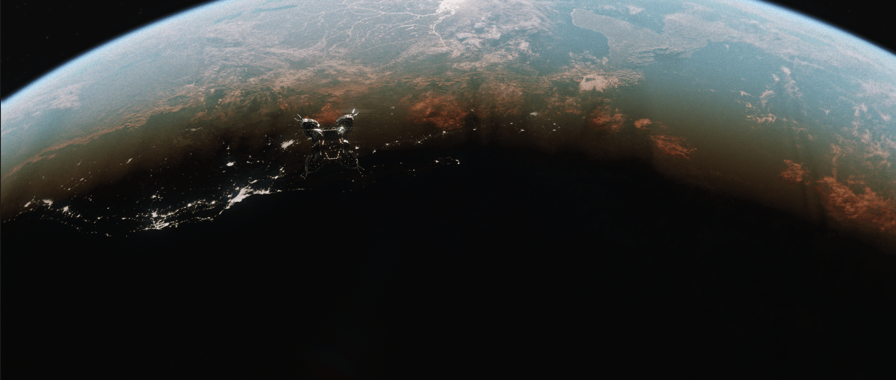
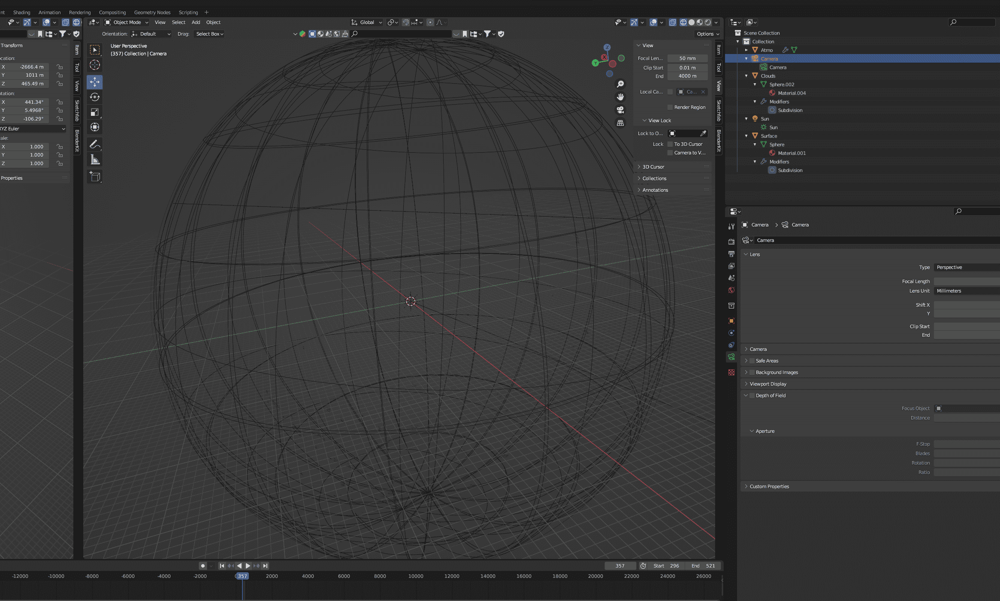
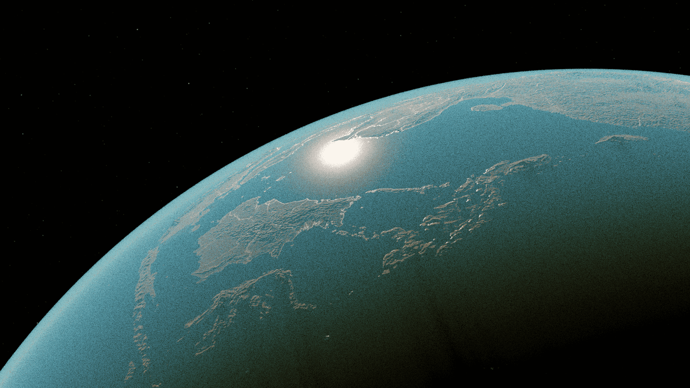

Valery's page

"Earth's Orbit" render made on Blender

Modeling is the process of creating a 3D representation of an object. In this project, I began by constructing simple spheres. Multiple spheres were used, with each one representing a different layer of the Earth’s structure, for example, separate spheres for the atmosphere and the ground terrain.

The project involved simulating the atmosphere, clouds, volumetric effects, lighting, and reflections. The length and direction of shadows were dynamically determined by the Sun’s angle, adding to the overall realism of the scene. The terrain was also taken into account to ensure a realistic representation of the Earth's surface. I used Earth data from NASA.
“Earth’s Orbit” is my most ambitious and detailed render to date. The original piece was fully animated, with a total render time of approximately eight hours. Its complexity comes from the use of volumetrics, as well as advanced lighting and shadow simulation, all created using the Cycles engine. In addition to rendering on Blender, the scene was enchanced on DaVinci Resolve.